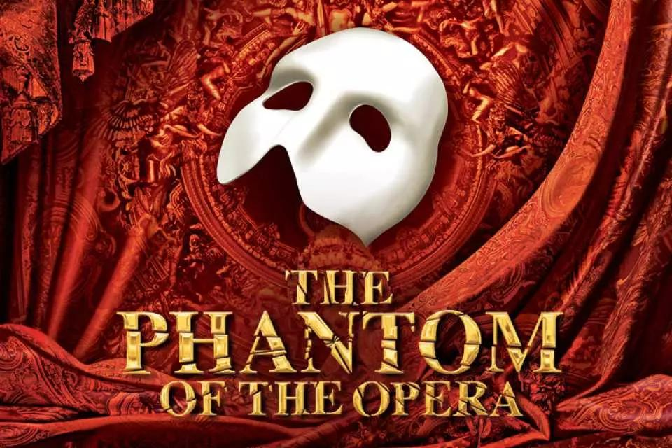

《歌剧魅影》The Phantom of the Opera
巴黎歌剧院地下，住着一位戴面具的音乐天才。他爱上了年轻女演员克里斯汀，爱与占有把他推向深渊。
必听：The Phantom of the Opera · The Music of the Night · All I Ask of You
看点：韦伯写出了一生的旋律；吊灯从观众头顶轰然坠落、地下湖泛舟、管风琴声响彻剧场——它是"舞美之王"，哥特浪漫的极致。
为什么必须现场：那盏吊灯，是朝你砸下来的。
▶ B 站看 25 周年纪念官摄